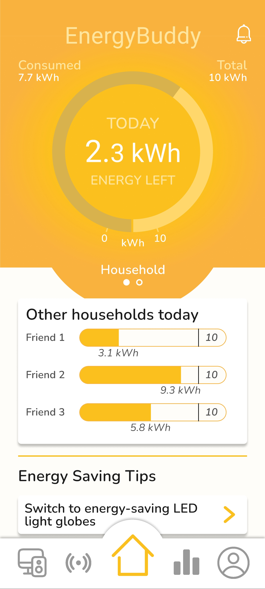
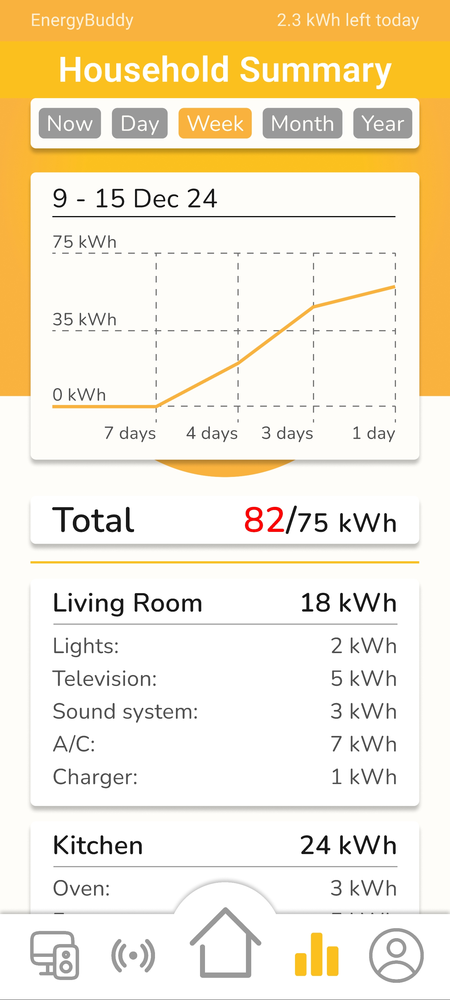
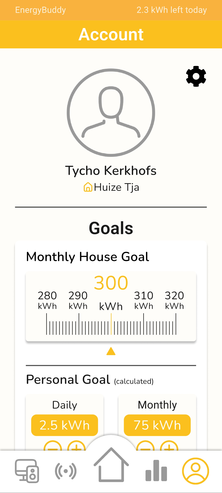
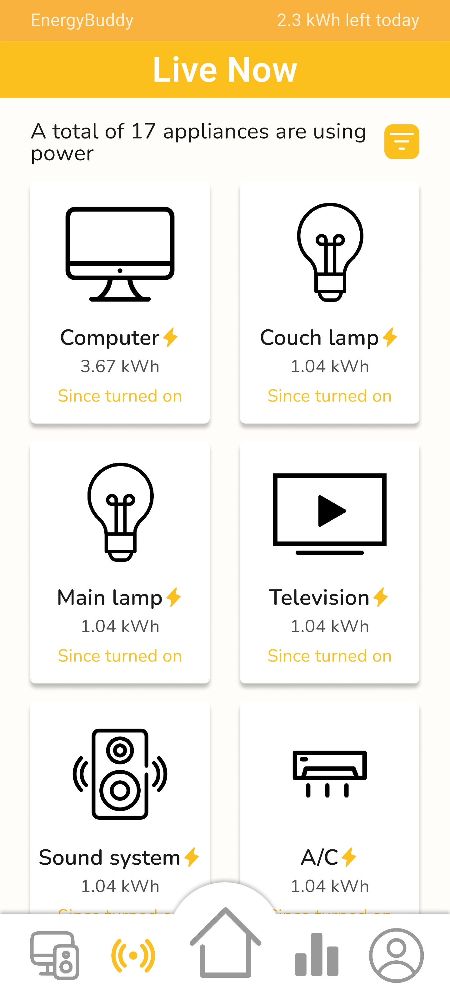
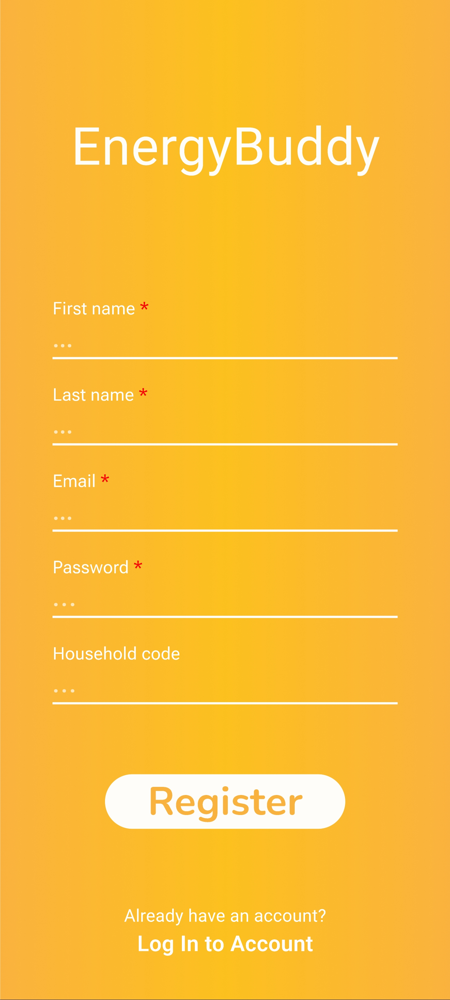

For this assignment, I had to design a Hi-Fi prototype of an energy dashboard for a shared student household. I chose to create Power Peak, an app designed to help students monitor and better understand their household's energy consumption.
The dashboard allows users to compare their energy consumption across different periods, such as days, weeks, months, and years. It also provides an overview of the energy consumption of individual household devices and allows users to control applicable devices directly or through timers and schedules.
The app also includes personal and household energy goals, encouraging users to become more aware of their consumption and make more energy-conscious decisions.
I designed the complete Hi-Fi prototype in Figma, focusing on creating a clear and accessible interface for students living in shared households.
Figma PrototypeUser Testing
After completing the prototype, I conducted user testing to evaluate how users interacted with the interface and whether the information presented in the dashboard was clear and understandable.
Participants were asked to interact with the prototype and answer a series of questions through a Google Forms questionnaire. The feedback focused on aspects such as the clarity of the interface, navigation, visualizations, and the usefulness of the different features.
The results provided insight into how users perceived the prototype and highlighted areas that could potentially be improved.





Copyright © Tycho Kerkhofs. All rights reserved.